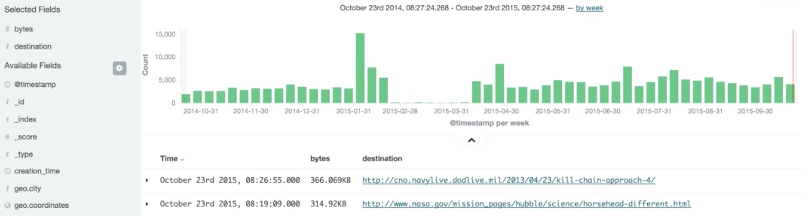
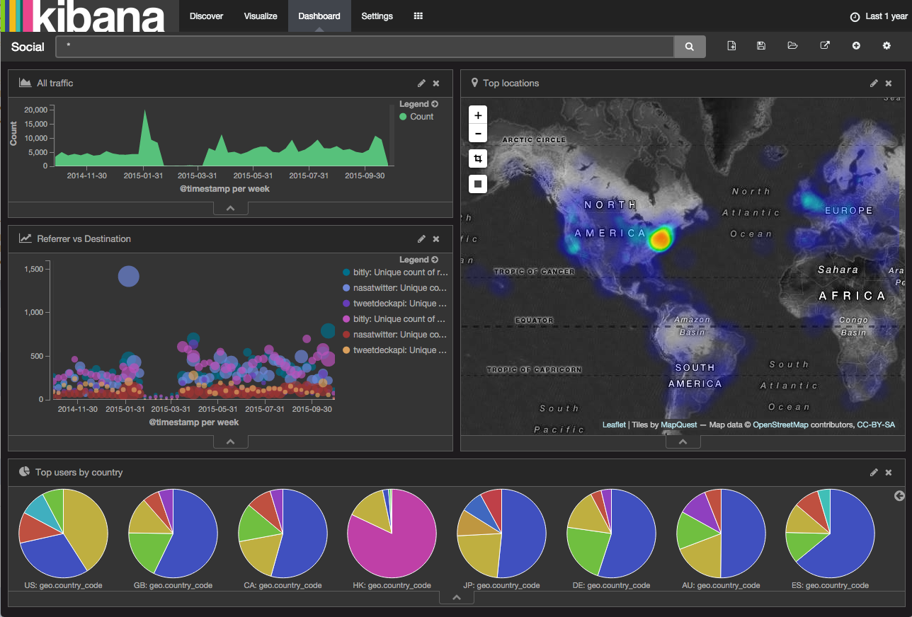
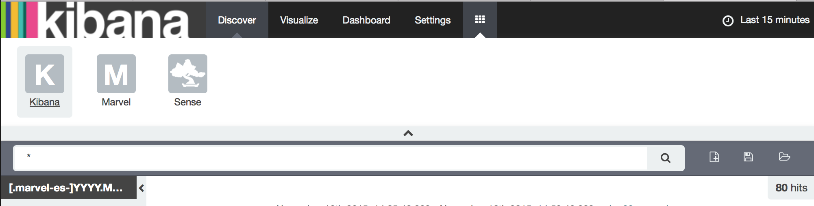
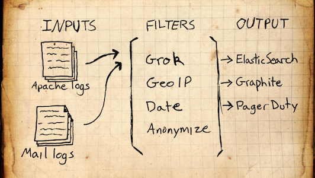
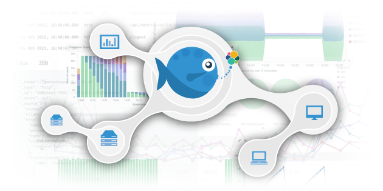
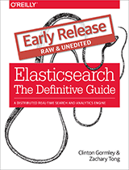

Elastic Vision
Remember!
- This is not an official informations.
- All these informations can be changed or removed.
- check https://www.elastic.co/blog for official release.
About Me
- Developer Advocate (Evangelist) at Elastic
- Based: Republic of Korea (South)
- Joined: Jun 2015
Release, we have
- Elasticsearch 2.0
- Kibana 4.2
- Logstash 2.0
Elasticsearch 2.0
Elasticsearch 2.0 Overview & Demo
Kibana 4.2
- Field Formatter
- Visualization
- Plugins
Field Formatter
Visualization
Plugins
bin/kibana plugin --install elasticsearch/marvel/latestBeyond kibana 4.2
Kibana will be a control panel of all Elastic products.
Logstash & Beats
Logstash
Beats
Beats
input(packet/file/top) > output(logstash/elasticsearch)
Logstash
input(Beats) > filters > output(elasticsearch)
Beats & logstash usage
- beats : forwarder
- logstash : filtering
- make logstash more thin
nodstash (ingest node)
- Node for special features.
- data filters (grok, geoip, kv/mutate, date...)
- Pipeline: composed of a chain of processors.
node.ingest: trueELK Stack
- One click install package (exe, pkg)
- X-Plugins: Elastic Extension
versioning
- elasticsearch 2.0
- logstash 2.0
- kibana 4.2
- beats 1.0
- elasticsearch 5.0
- logstash 5.0
- kibana 5.0
- beats 5.0
The end
- github: https://github.io/kimjmin
- slides: https://kimjmin.github.io/presentations
Elasticsearch 한국 커뮤니티
the Definitive Guide
X Blogging
개인 또는 기업 블로그의 Elasticsearch 관련 포스트를 elastic.co 블로그에 동시 포스팅.
Kibana Demo

www.elastic.co

CC-BY-ND 4.0